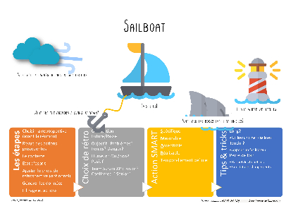
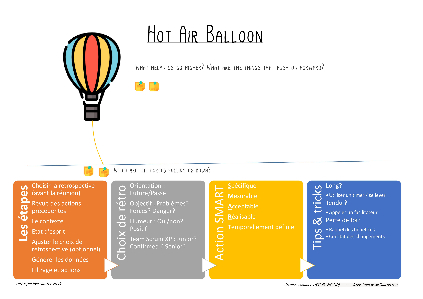
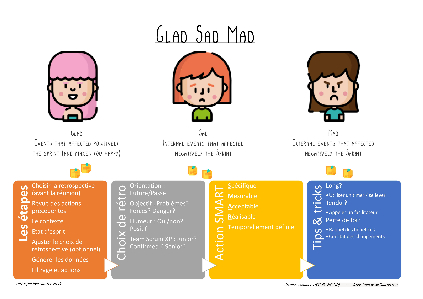
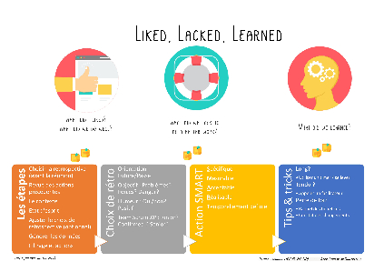
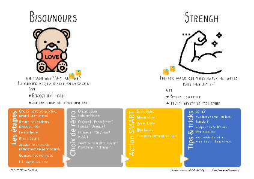
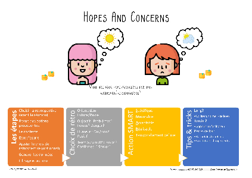
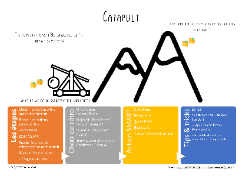
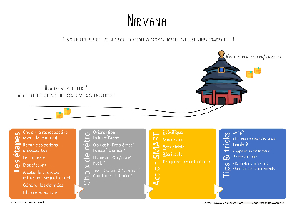

Introduction
L'objectif de cet article et de la présentation associée est de fournir une méthode clé et des supports clés en main pour qu'un Scrum Master débutant puisse réussir sa rétrospective :
- Rappel des bases de la rétrospective,
- Les étapes clés
- Choisir une rétrospective en fonction de critères
- La sélection de rétrospectives
Qu'est ce qu'une rétrospective?
Définition globale
Une rétrospective est une réunion se déroulant à la fin d'un projet pour analyser les faits et essayer d'en tirer les conclusions. C'est lors de cette réunion que l'histoire collective du projet est reconstituée à partir des éléments que chacun des membres va apporter. L'objectif principal est d'analyser les faits, améliorer la sagesse de l'équipe et éventuellement réaliser un plan d'actions.
La rétrospective est un élément essentiel dans l'agilité, on y fait référence dans le manifeste agile : "À intervalles réguliers, l'équipe réfléchit aux moyens de devenir plus efficace, puis règle et modifie son comportement en conséquence."
Par conséquent on le retrouve dans les méthologies les plus utilisées qui en dérivent :
- XP : http://www.extremeprogramming.org/rules/fixit.html
- Scrum : https://www.scrum.org/resources/what-is-a-sprint-retrospective
- Kanban (pas de mention directe mais dans la documentation des utilisateurs): http://www.shmula.com/what-is-a-kanban-retrospective/22539/
La rétrospective dans Scrum

La rétrospective 'by the book'
D'après le guide Scrum, le but de la rétrospective de Sprint est :
- D’inspecter la manière dont le dernier Sprint s'est déroulé en ce qui concerne les personnes, les relations, les processus et les outils ;
- D’identifier et ordonner les éléments majeurs qui se sont bien déroulés et les améliorations potentielles ;
- De créer un plan pour améliorer les processus de travail de l'Équipe Scrum
Les étapes d'une rétrospective réussie
- Choisir la rétrospective (avant la réunion)
- Revue des actions précédentes
- Le contexte
- Etat d'esprit
- Ajuster le choix de rétrospective (optionnel))
- La génération des données
- Filtrage et actions
Choisir la rétrospective
Le scrum master va choisir une rétrospective lors de la préparation de la réunion.
Au bout d'un certain temps l'équipe va avoir envie de varier les activités. De plus la répétition régulière des mêmes formats peut entrainer un aspect routinier qui diminue l'implication de l'équipe et la pertinence des remontées d'information.
Souvent c'est le Scrum Master qui va décider de l'activité à réaliser et le choix d'une rétrospective adaptée à l'esprit de l'équipe à ce moment et au déroulement général du sprint peut réellement améliorer la communication et permettre à l'équipe de trouver des actions positives y compris à la sortie de sprints compliqués ou perçus comme 'ratés'.
C'est ici que cet article est intéressant puisque il vous propose une sélection de formats pertinents avec une grille d'aide à la décision.
Revue des actions
Etape primordiale, la revue des actions permet de savoir ce qui a été réalisé et ce qui doit être encore fait. Logiquement toutes les actions qui ont été réalisées ont rendu l'équipe meilleure.
Il faut donc prendre du temps pour le souligner.
Les actions non réalisées des sprint précédent doivent automatquement être intégrées dans les actions du Sprint en cours. Si une action n'est pas réalisée sur les 2 Sprints suivants, il n'y a pas de raisons de la garder.
Rappel du contexte
- Nous sommes au Sprint 31, plus que deux Sprint avant la mise en production.
- Lors de ce Sprint nous avons mis en production la feature X.
- Lors de ce sprint monsieur Paul à intégré l'équipe.
- Le management
Etat d'esprit
- Questions directes
- Météo du Sprint
- Health Check
- Radar du bonheur
- TeamMood.
Ajuster le choix de la rétrospective
Avec l'expérience, un Scrum Master va connaitre plusieurs formats de rétrospectives relativement similaires (orientée sur les actions, sur l'analyse des points faibles, positivantes ...). Dans le cadre d'équipes stables et qui se connaissent bien, le Scrum Master peut alors choisir non pas une rétrospective précise en phase 1, mais une catégorie de rétrospective, et ajuster son choix en fonction de sa perception de l'équipe au moment de la réunion, notamment dans les étapes 2, 3, 4 et 5
Par exemple, on a choisi une activité orientée analyse des problèmes car le sprint a été difficile. Plusieurs rétrospectives mettent plus particulièrement l'accent sur ce point :
http://www.funretrospectives.com/known-issues/ ,
http://www.funretrospectives.com/www-activity-worked-well-kinda-worked-didnt-work/
http://www.funretrospectives.com/dealing-with-failure-fmea/
etc ..
Dans ce cas, par exemple, en imaginant que l'équipe est plutôt dans un état d'esprit négatif, ressassant les problèmes rencontrés etc, peut être qu'une rétrospective axée sur la positivation peut être pertinente : (http://retrospectives-agiles.fr/post/39582584304/la-r%C3%A9trospective-bisounours).
La génération de donnée / la rétrospective
Filtres et actions
A l'issue d'une rétrospective, l'objectif est d'obtenir un consensus sur les points perçus comme les plus importants parmi les sujets remontés à l'étape "génération de données".
Cela permet à chacun des membres d'exprimer leur avis sur les axes d'amélioration qu'il considère les plus efficaces ou urgents.
Les actions ayant été exprimées doivent ensuite être filtrées et priorisées, afin de n'en retenir que quelques unes (de 1 à 3 à peu près) comme conclusion
La majorité des formats de rétrospectives appliquent cette étape de filtrage via une discussion de groupe ou une séance de vote individuel.
Ces actions doivent être des décisions applicables directement par l'équipe avec un reponsable défini à l'avance et ce dans un objectif d'amélioration continue.
Un bon moyen mnémotechnique pour créer des actions efficaces et d'appliquer le modèle S.M.A.R.T.
- S : Spécifique,
- M : Mesurable,
- A : Acceptable,
- R : Réalisable,
- T : Temporellement définie
Les actions décidées en rétrospectives doivent principalement concerner l'équipe. De temps en temps, les membres peuvent également noter des actions pour d'autres équipes si celles ci sont réalisables. Il s'agit souvent des blocages rencontrés par l'équipe au cours du Sprint (impediments).
Préparer et choisir sa rétrospective, notre top!
La rétrospective par défaut peut répondre à votre besoin. Cela dit, une équipe peut ressentir le besoin ou l'envie de tester de nouvelles façon d'aborder les sujets en rétrospectives.
Sources :
- Fun retrospective
- http://retrospectivewiki.org/index.php?title=Retrospective_Plans
Rétrospectives
- Sailboat
- Hot-air Balloon
- Glad, Sad, Mad
- Lacked Liked Learned
- Bisounours
- Strengh
Futurespectives
La futurspective est un type particulier de rétrospective. En effet la plupart du temps on veut se concentrer sur ce qu'il s'est passé mais de temps en temps il est intéressant de faire en sorte que l'équipe se concentre sur un futur relativement proche afin de déceler les obstacles ou de dessiner un objectif commun.
- Hopes And Concern
- Catapult
- Nirvana
Préparation de la rétrospective
Comment choisir une rétrospective?
Choisir une rétrospectives dépend de la personnalité des Scrum Master et des équipes.Cet article présente une sélection pertinente et avance qu'un Scrum Master doit maitriser quelques formats, ce qui lui permet d'améliorer ses compétences en conduire de réunion, animation, synthèse, etc...
Voici une grille avec différents critères permettant de choisir la rétrospective adaptée.
Grille de choix
|
Caratéristique
|
|
|---|---|
|
Caratéristique
|
|
| Orientation |
Futur? Rétrospective ? |
| Objectifs |
Problèmes ? Forces ? Dangers? |
| Humeur |
oui ou non? positivante? |
|
Expérience en agilité |
Junior? Confirmed? Senior? |
|
Rétrospective
|
Orientation
|
Objectifs
|
Humeur
|
Expérience en agilité
|
|---|---|---|---|---|
|
Rétrospective
|
Orientation
|
Objectifs
|
Humeur
|
Expérience en agilité
|
| Sailboat | Rétrospective | Forces, faiblesses, menaces | non | Confirmed |
|
Hot air balloon |
Rétrospective | Forces, faiblesses | non | Junior |
| Glad, sad, mad | Rétrospective | oui | Confirmed | |
| Lacked, Liked, Learned | Rétrospective | oui | Confirmed | |
| Bisounours | Rétrospective | oui, positif | Junior | |
| Strengh | Rétrospective | Forces | oui, positif | Senior |
| Catapult | Futurspective | Forces, faiblesses | non | Junior |
| Hopes and Concerns | Futurspective | oui | Junior | |
| Nirvana | Futurspective | oui, positif | Senior |
Rétrospectives
Anchors and Engine / Sailboat
Hot-air Balloon
Glad, Sad, Mad
Lacked Liked Learned
Bisounours / Strengh
Futurspectives
Hopes And Concerns
Catapult
Nirvana
Conclusion
Une rétrospective réussie est une étape importante dans la construction d'une équipe agile efficace. Côté humain, elle offre un cadre ou les équipiers peuvent échanger. Travailler en groupe n'est pas un exercice évident, surtout si l'équipe est junior ou sI elle vient d'intégrer de nouveaux membres. Pourtant, il est primordial que tout le monde ait la possibilité de parler. Il faut donc construire un environnement positif ou règne un climat de confiance. Le scrum master doit agir comme un chef d'orchestre : assurer le tempo de la réunion et permettre à tous les membres de s'exprimer.
Liens externes
Le site web : retrospective-starter-kit.tk
Licence creative commons : CC-BY-NC-ND
La version présentation : http://slides.com/kenji_getpowered/scrum-retrospective-starter-kit#/
Licence creative commons : CC-BY-NC-ND
Références
- http://www.lifeisaseriousgame.com/icebreaker-jeux-reunion-apprendre-se-connaitre/
- https://www.frontrowagile.com/blog/posts/28-choosing-a-retrospective-topic
- http://www.caroli.org/a-7-step-agenda-for-effective-retrospectives/
- https://www.thoughtworks.com/insights/blog/7-step-agenda-effective-retrospective
- http://www.funretrospectives.com/known-issues/
- http://retrospectivewiki.org/index.php?title=Retrospective_Plans